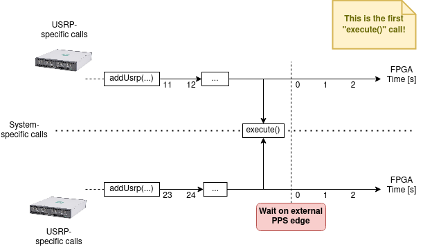
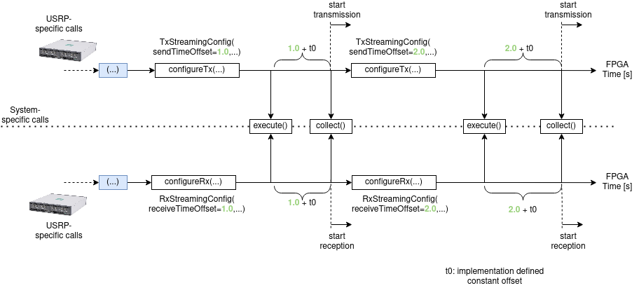
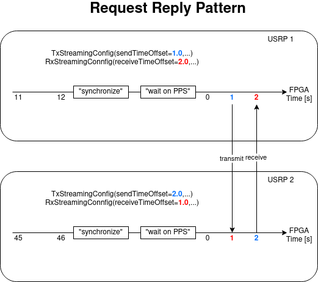

Synchronisation & Communication Patterns¶
If a usrp_client.system.System consists of multiple USRPs, their clocks and their carrier frequencies
need to be synchronized. We assume that the USRPs have a PPS in port that accepts Pulse Per Second (PPS) signals.
This signal is provided by an external device.
The USRPs have a built-in trigger that detects PPS signals. Once a PPS signal arrives, the internal USRP time can be set to zero. Each USRP has an interval FPGA time. If the USRPs are synced, the FPGA time is reset at the next PPS edge, cf. the following picture:
It is to be noted that there are calls on the System itself (without explicitely accessing the USRP) and there
are calls that access the USRPs within the System. They need to be set in the API call.
The following picture shows the usual workflow:
In the following description, we assume the USRPs to be synchronized.
After having created the system via system = System() and after having added the USRPs
to the system with addUsrp (in the picture, we assume two USRPs to be added), we define
their streaming configurations with the dataclasses TxStreamingConfig and RxStreamingConfig.
Within the streaming configurations, we set time offsets.
In the example, we define a TxStreamingConfig with sendTimeOffset=1.0 and a RxStreamingConfig
with receiveTimeOffset=1.0. Afterwards, the execute() function is called, checking if
the USRPs are in sync.
After having defined the streaming configuration, execute() needs to be called. In order to
collect the actual samples collect() needs to be called afterwards, which is a blocking call.
It waits for transmission to be finished. The offsets defined in the streaming configurations (highlighted
in green in the image) are with respect to the execute() call. On top of the defined offsets,
a implementation-defined constant time offset t0 is added.
As depicted, the system can be reused if multiple packages need to be transmitted.
Communication Patterns¶
Based on these offsets, you can define your own communication patterns. The following illustrates a Request-Reply-Pattern:
If you want to define a multi-cast pattern, the streaming configurations look as follows (pseudo-code):
tUsrp1 = TxStreamingConfig(sendTimeOffset=1.0, ...)
rUsrp2 = RxStreamingConfig(receiveTimeOffset=1.0, ...)
rUsrp3 = RxStreamingConfig(receiveTimeOffset=1.0, ...)
JCAS looks as follows:
tUsrp1 = TxStreamingConfig(sendTimeOffset=1.0, ...)
rUsrp1 = RxStreamingConfig(receiveTimeOffset=1.0, ...)
rUsrp2 = RxStreamingConfig(receiveTimeOffset=1.0, ...)
Assume you want to send a multi-cast from USRP1 to USRPs 2 and 3 and afterwards send a unicast to USRP4 from USRP1:
system = System()
system.addUsrp(...) # add your usrps here
# multi-cast
tUsrp1 = TxStreamingConfig(sendTimeOffset=1.0, ...)
rUsrp2 = RxStreamingConfig(receiveTimeOffset=1.0, ...)
rUsrp3 = RxStreamingConfig(receiveTimeOffset=1.0, ...)
system.configureTx(usrpName="usrp1", txStreamingConfig=tUsrp1)
system.configureRx(usrpName="usrp2", rxStreamingConfig=rUsrp2)
system.configureRx(usrpName="usrp3", rxStreamingConfig=rUsrp3)
system.execute()
samplesMulticast = system.collect()
# unicast
tUsrp1 = TxStreamingConfig(sendTimeOffset=3.0, ...)
rUsrp4 = RxStreamingConfig(receiveTimeOffset=3.0, ...)
system.configureTx(usrpName="usrp1", txStreamingConfig=tUsrp1)
system.configureRx(usrpName="usrp4", rxStreamingConfig=rUsrp4)
system.execute()
samplesUnicast = system.collect()